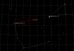

Click a thumbnail for a larger graphic

|
|  |
{kind=link}
One evening last winter I took my telescope to Henry Coe State Park, my favorite site.
There was only one other gentleman there. He was busy with his projects. It was a quiet, chilly night. I did not have any observing plan, so I just visited old places. At some point, the gentleman started a conversation and showed me a nice edge-on galaxy in Coma Berenices.
I looked up the galaxy on my laptop, and few minutes later I had it in my eyepiece. I got excited - a new adventure was about to begin. I moved the scope to Virgo, and a few galaxies popped into the view. I must have said something, because the gentleman commented. “There are thousands of them there.” He was not at all talkative.
For the rest of the night I stayed glued to my eyepiece, just slewing the telescope from one galaxy to another. Later, I shared my observation with colleagues during one of the meetings of the SJAA. Mike Koop suggested I had observed Markarian's chain.
I went home, logged on to the Internet and started to read about Markarian's Chain of Galaxies so I would be prepared for the next observing night. This time I would not just wander around. I prepared a list of the objects, found them on my laptop, and rehearsed it all. This was how my little adventure started.
The following weekend was dark, so I rushed to Henry Coe. The same gentleman was there, quietly working on his projects. I started working on Markarian's chain. What is Markarian's chain? It is a group of eight galaxies located in Virgo. That was all I knew back then.
The object list, according to my February 2001 research included: NGC 4374, NGC 4406, NGC 4435, NGC 4438, NGC 4458, NGC 4461, NGC 4473, NGC 4477. Where are they? If you connect the left arm of Virgo with the rear of Leo, the group starts slightly below middle point of the line. The chart on the next page shows Telrad (4 degree) circles.
What does the group of galaxies look like? The eight NGC objects are marked. It is up to you to identify the rest of them. The magnitude ranges from 9.2 to 13.0, surface brightness from 12.53 to 14.73. I would suggest taking a 12.5" or a bigger telescope. Remember, the galaxies will appear more detailed at higher magnification. The galaxy group is a very nice sight. All the galaxies in the group span only 1.5 degrees. Why only eight galaxies? I have counted more than twelve in the group. The questions started to pile up. Then, as usual, something else took my attention.
Virgo is back in the sky and so are my questions about Markarian. Once more, I queried Markarian's name on the Internet, and have found more that I could wish to find.
So, here is what I discovered: Markarian's chain is just eight of some 1500 peculiar galaxies, that were catalogued by Russian astrophysicist B.E. Markarian. In May 1966, Markarian published The galaxies with UV Continua. Around that time, he started the First Byurakan Spectral Sky Survey (FBS) - now completed. In 1975, Markarian initiated a Second Survey (SBS). The SBS was continued by his collaborators after his death.
In other words, Markarian was looking for galaxies that would emit unusually strong UV radiation. Well, as it turns out, these are galaxies that have Active Galactic Nuclei (AGN), which emit lots of energy, not only in UV but also in a very wide range, from gamma and x-rays, through UV and visible light to infrared and radio waves.
That is enough; you can find more information by yourself. Try Active Galactic Nuclei, by D. E. Osterbrock, http://nedwww.ipac.caltech.edu/level5/Osterbrock3/Oster_contents.html and NASA Astrophysics Data System (ADS), http://www.harvard.edu - search for Markarian.
You will read about quasars, black holes, and many other interesting things. When you look at a Markarian galaxy, pause and give it some thought. These galaxies are very bright, but we cannot see them. Would the UV radiation stop nature in its creation process? What would our world look like, if our galaxy hosts a monster in the center? Well, I think that nature always finds its way. This is a time for a little meditation, so stop chasing galaxies for the moment and stop logging them by the hundreds. Relax and have some coffee. This is how I observe.